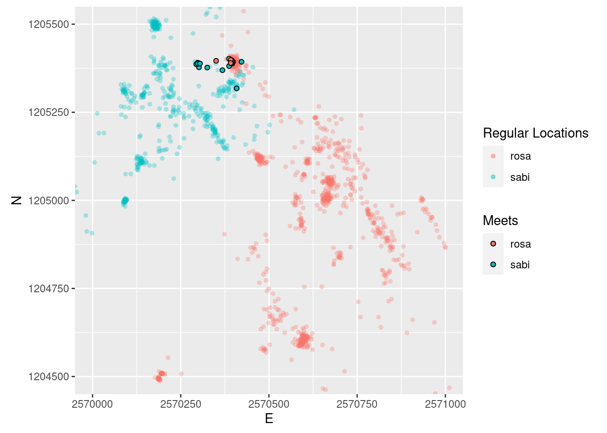
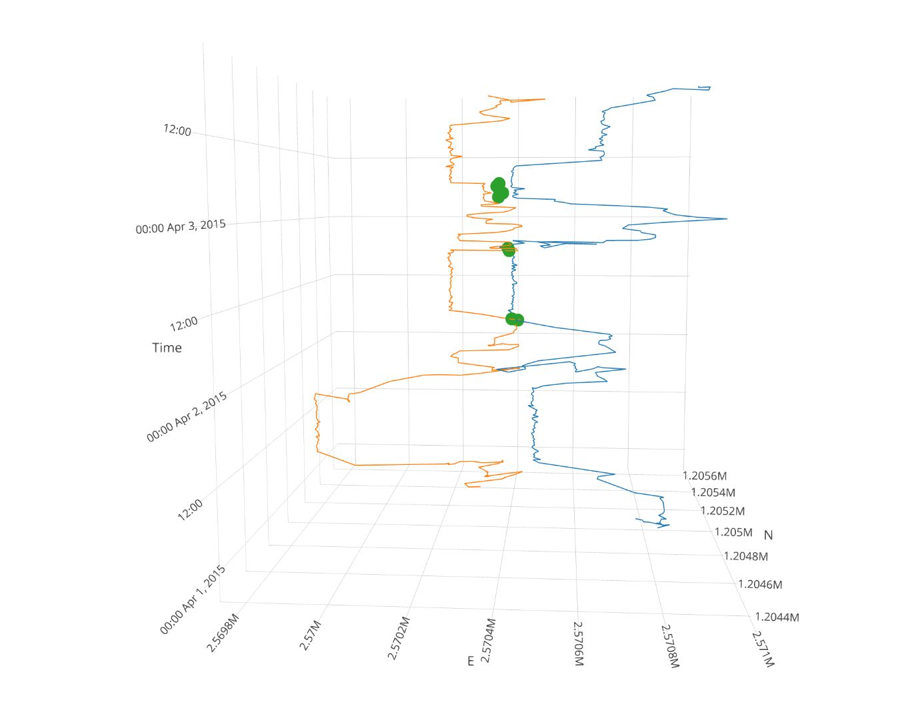

Tasks and inputs
Up to now, we have used a variety of different functions designed by other developers. Sometimes we need to execute an operation multiple times, and most often it is reasonable to write a function to do so. Whenever you have copied and pasted a block of code more than twice, you should consider writing a function (Wickham and Grolemund 2017).
We have violated this rule multiple times when calculating the Euclidean distances between points. Writing and rewriting the code sqrt((x-lead(x,1))^2+(y-lead(y,1))^2) over and over again is not only cumbersome, it is also error prone. We can easily wrap this operation into a function. This input on writing functions should bring you up to speed to do this in your first task.
The first step in writing a function, is picking a name and assigning <- function(){} to it.
testfun <- function(){}To run the function, we have to call the assigned name with the brackets. This function gives no output, which is why we get NULL back.
testfun()
## NULL
class(testfun)
## [1] "function"To make the function actually do something, we need to specify what should be done within the curly brackets {}. The following function always prints the same statement and accepts no input values:
testfun <- function(){print("this function does nothing")}
testfun()
## [1] "this function does nothing"If we want the function to accept some input values, we have to define them within the round brackets. For example, I specify a variable named sometext and can call this variable within the execution.
testfun <- function(sometext){print(sometext)}
testfun(sometext = "this function does slightly more, but still not much")
## [1] "this function does slightly more, but still not much"Let’s take a more practical example. Say we want a function that calculates our age if provided with the date of our birthday. We can use Sys.time() to provide today’s date and difftime() to calculate the time difference between today and our birthday.
my_age <- function(birthday, units){
difftime(Sys.time(),birthday, units = units)
}
my_age(birthday = "1997-04-23", units = "days")
## Time difference of 9137.314 daysAs we already know from using other functions, if we declare our variables in the order that we initially listed them, we do not need to specify the parameters (no need of birthday = and units =).
my_age("1997-04-23", "days")
## Time difference of 9137.314 daysIf we want any of our parameters to have default value, we can assign an initial value to the parameter when declaring the variables within the round brackets.
my_age <- function(birthday, units = "days"){
difftime(Sys.time(),birthday, units = units)
}
# if not stated otherwise, our function uses the unit "days"
my_age("1997-04-23")
## Time difference of 9137.314 days
# We can still overwrite units
my_age("1997-04-23", "hours")
## Time difference of 219295.5 hoursAll you need to do now is run execute the function deceleration (myage <- function... etc.) at the beginning of your script, and you can use the function for your entire R session. Tip: Always try to make your function self sufficient: Don’t call variables that were created outside the function call.
Task 1: Write your own functions
Create a function for our Euclidean distance calculation.
Note: if you treat your input variables as vectors, they will work in dplyrs mutate() and summarise() operations.
Task 2: Prepare Analysis
In the next tasks we will look for “meet” patterns in our wildboar data. To simplify this, we will only use a subset of our wildboar data: The individuals Rosa and Sabi for the timespan 01.04.2015 - 15.04.2015. You can download the dataset here wildschwein_BE_2056.csv (right click > save target as…) and filter it with the aforementioned criteria.
Remember to load the necessary libraries first! We propose the following:
library(readr)
library(dplyr)
library(ggplot2)
library(lubridate)Task 3: Create Join Key
Have a look at your dataset. You will notice that samples are taken at every full hour, quarter past, half past and quarter to. The sampling time is usually off by a couple of seconds.
To compare Rosa and Sabi’s locations, we first need to match the two animals temporally. For that we can use a join, but need identical time stamps to serve as a join key. We therefore need to slightly adjust our time stamps to a common, concurrent interval.
The task is therfore to round the minutes of DatetimeUTC to a multiple of 15 (00, 15, 30,45) and store the values in a new column5. You can use the lubridate function round_date() for this. See the examples here to see how this goes.
Your new dataset should look something like this (note the additional column):
## # A tibble: 6 × 7
## # Groups: TierID [1]
## TierID TierName CollarID DatetimeUTC E N DatetimeRound
## <chr> <chr> <dbl> <dttm> <dbl> <dbl> <dttm>
## 1 002A Sabi 12275 2015-04-01 00:00:11 2.57e6 1.21e6 2015-04-01 00:00:00
## 2 002A Sabi 12275 2015-04-01 00:15:22 2.57e6 1.21e6 2015-04-01 00:15:00
## 3 002A Sabi 12275 2015-04-01 00:30:11 2.57e6 1.21e6 2015-04-01 00:30:00
## 4 002A Sabi 12275 2015-04-01 00:45:16 2.57e6 1.21e6 2015-04-01 00:45:00
## 5 002A Sabi 12275 2015-04-01 01:00:44 2.57e6 1.21e6 2015-04-01 01:00:00
## 6 002A Sabi 12275 2015-04-01 01:15:17 2.57e6 1.21e6 2015-04-01 01:15:00Task 4: Measuring distance at concurrent locations
To measure the distance between concurrent locations, we need to follow the following steps.
- Split the
wildschwein_filterobject into onedata.frameper animal - Join* these datasets by the new
Datetimecolumn created in the last task. The joined observations are temporally close. - In the joined dataset, calculate Euclidean distances between concurrent observations and store the values in a new column
- Use a reasonable threshold on
distanceto determine if the animals are also spatially close enough to constitute a meet (we use 100 meters). Store this Boolean information (TRUE/FALSE) in a new column
* We recommend using one dplyrs join methods (inner_join(), left_join(), right_join() or full_join()), which one is appropriate? Tip: specify suffix to prevent column names ending in .x or .y.
Task 5: Visualize data
Now, visualize the meets spatially in a way that you think reasonable. For example in the plot as shows below. To produce this plot we:
- Used the individual dataframes from
rosaandsabi(from the previous task) - Used the joined dataset (also from the previous task), filtered to only the meets
- Manually changed the x and y axis limits

Task 6 (optional): Visualize data as timecube with plotly
Finally, you can nicely visualize the meeting patterns and trajectories in a Space-Time-Cube (Hägerstraand 1970) with the package plotly. There are some nice ressources available online.

Please note: We are manipulating our time stamps without adjusting the x,y-coordinates. This is fine for our simple example, but we would advice against this in a more serious research endeavour, e.g. in your semester projects. One simple approach would be to linearly interpolate the positions to the new timestamps. If you choose Option A the wild boar projects as your semester projects, you should aim for a linear interpolation. Get in touch if you need help with this.↩︎